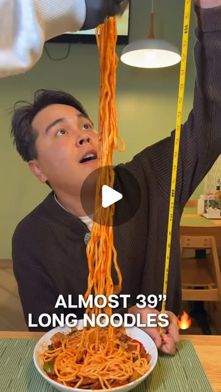
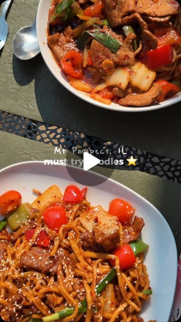
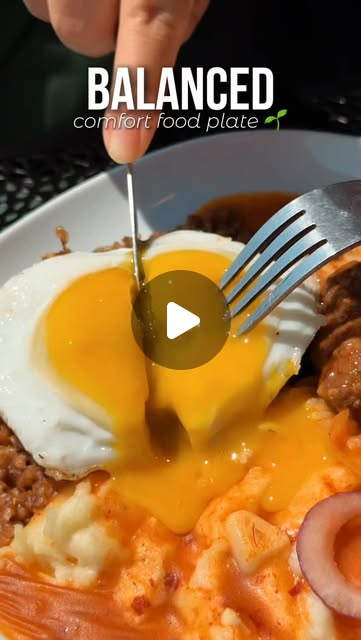
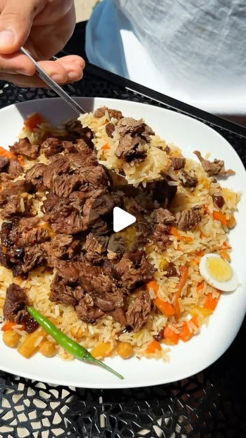
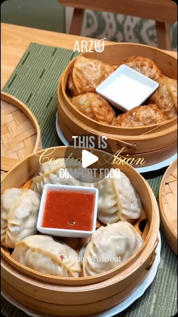

"
★★★★★
Everything was excellent! The plov was especially delicious. We really enjoyed the food, the cozy atmosphere, and the friendly service. We'll definitely be back.
3 days ago
"
★★★★★
Had a great time with my family last night — the brother working there recommended some excellent dishes. Kids loved the dumplings and noodles. This gem is getting our visit again!
3 days ago
"
★★★★★
The fresh, hand-pulled noodles have an incredible, chewy texture — an aromatic, deeply satisfying comfort food. We also loved the dumplings (Chuchvara) and samsa.
1 week ago
"
★★★★★
Very delicious, I really recommend it. Huge portions of food and reasonable prices. The sea buckthorn tea deserves special mention.
1 week ago
The latest from Instagram
New dishes, behind-the-scenes and specials — follow @arzu_chicago for more.




